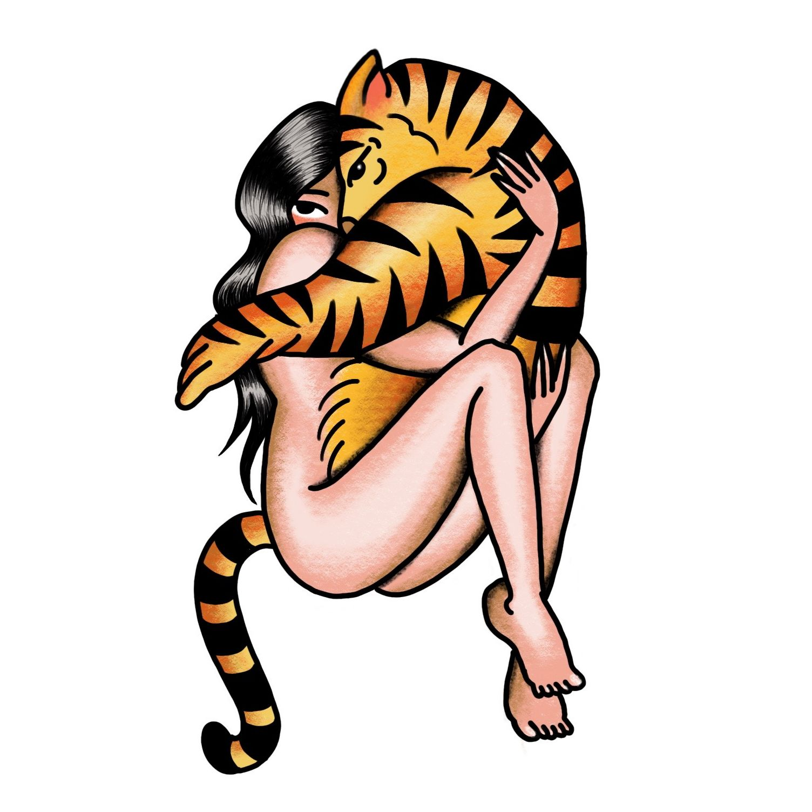

“Prusten: tipo de comunicação exibida por alguns membros da família Felidae, descrita como uma vocalização curta, de baixa intensidade e não ameaçadora. É frequentemente usada entre dois felinos como uma forma de saudação.”
Digitou os números na tela. Hesitou. Se tocou que a ideia era absurda. Tentou apagar os números e quase ligou sem querer. O celular em frente ao rosto escorregou das mãos e caiu contra o peito. A madrugada abafada fervia o seu corpo desnudo e suarento deitado na cama de lençóis bagunçados, o coração palpitava incansável. Aquele colchão velho cedeu há um tempão e ele sentia o seu tronco afundar no mar de espumas frouxas. Na janela aberta, a gata miava esganiçada, estava no cio. Não sabia mais porque não conseguia dormir, se era o calor, o barulho estridente da gata, aquela cama de merda. Conferiu a tela e os números tinham sumido, pôde finalmente respirar aliviado. Uma mensagem sempre paralela à sincronicidade. Que audácia, julgou. Dizem que as más ideias surgem do descuido, da falta de juízo! As piores parecem mesmo fincar no meu cérebro às três da manhã de uma quarta-feira, quando eu só queria dormir.
– Mas como o tigre sumiu? É um animal perigoso. Como vamos encontrá-lo?
Escutou vozes desesperadas para além de uma névoa espessa que rodeava o seu corpo. Permaneceu paralizado; a sonolência mesclava-se ao real e embrulhava seus sentidos. Tentou dizer alguma coisa, mas só balbuciava, falava para dentro. Tentou mover os pés, mas eram pesados demais. Olhou para o chão e haviam alguns rastros: pelos, uma marca de arranhão. Sem pegadas. De repente, alguém surge em meio à névoa. É um andarilho com uma mochila grande, vestindo roupas empoeiradas, à procura do tigre. Trazia na mão uma bússola antiga que parecia não funcionar direito. Passou sem expressão. As vozes continuavam.
– Escutem… Ele está vindo.
Um frio na espinha subiu as suas costas. Estava certo de que o tigre farejava o seu espírito. O lume de vida que o animal desejava, era como uma vela no meio da escuridão. Seus pensamentos eram neblina, o tempo flutuava. Queria fugir, mas permanecia preso. Levou um susto quando reparou: lá estava o clarão em seu peito, luzia a chama divina. Colocou a mão sobre o tórax e era cálido, quase queima a sua pele. Um ruído chama atenção. Não enxerga um palmo à sua frente, seus ouvidos continuam atentos em cada sonido. Algo parece espreitar a sua presença, orbitando o seu corpo. Vira-se. A luz esbranquiçada cega os seus olhos, ele perde o equilíbrio e cai. A queda lhe parece maior do que a distância entre o seu corpo e o chão e ele se apavora com a sensação de tombar em um abismo. A sensação é cada vez mais insuportável até sentir o seu coração finalmente sucumbir.
Desperta num estalo. Está agora em uma sala aconchegante, sentado diante de uma lareira, onde os pés deslizavam macios sobre um tapete vinho. A poltrona abraçava seu corpo, a ansiedade passou. Mas algo está errado. O medo volta e toma conta do seu corpo outra vez. Sente uma lambida na mão apoiada no braço da poltrona e o líquido da saliva escorrendo lentamente por entre os dedos. A língua áspera faz cócegas. A fera lambe sua mão, ameaça morder, quer carinho. O seu corpo enorme tem vigor, robustez. Os pelos brilham laranjas e pretos. Seus movimentos são lânguidos, ensina desejo. É uma tigresa.
Se entreolham.
O olhar felino brilha em um amarelo de luminosidade intensa, cintilava como a estrela solar. Tão natural e abrasador. Por um instante, o horror dá lugar a um reconhecimento estranho. A franqueza daqueles olhos emanam uma força gravitacional esquisita, ele se sente impelido a se aproximar e ensaia uma carícia. Mas seu toque desajeitado parece desestabilizar a linha tênue entre os dois corpos, desproporcionalmente fortes. Então, a tigresa avança sobre o homem, apoiando as patas no seu peito, sentindo o calor e o coração descompassado da sua presa. Aproxima-se ainda mais e inspira profundo o cheiro na nuca. Ela acha graça, pois já conhecia aquela essência de longe. Estremece, vitoriosa na caçada. Tinha se movido contra o vento. Dessa forma, chegaria de surpresa, escondendo o seu próprio cheiro. Era infalível. Estava acostumada com o espanto no olhar do outro quando aparecia pronta e sentia deleite nesse segundo da chegada não anunciada. Dava água na boca. Agora sim, ela podia cumprir o seu desejo e dar voz ao seu instinto. Ele estava sob o seu jugo.
Cativo, ele esfrega seu nariz contra o rosto da tigresa, desliza as mãos sobre os pelos aveludados, suave, massageando o corpo pesado sobre o seu. A posição de ataque da tigresa vai se desfazendo aos poucos, arranhando gentilmente as suas garras nos braços, até se aconchegar por completo no colo dele. Sobre o medo, prevalece o desejo. E ali ficaram, como dois animais.
Esquentava o corpo do homem como uma manta, esfregando…
Acordou ofegante. O corpo rijo parecia não ter voltado daquele sonho ainda pulsante como a realidade. No pé da cama de colchão batido, a gata dormia tranquila. O mormaço tinha finalmente se rendido à brisa leve que entrava de mansinho pela janela. Olhou para o celular ao lado da cama, nenhuma mensagem.